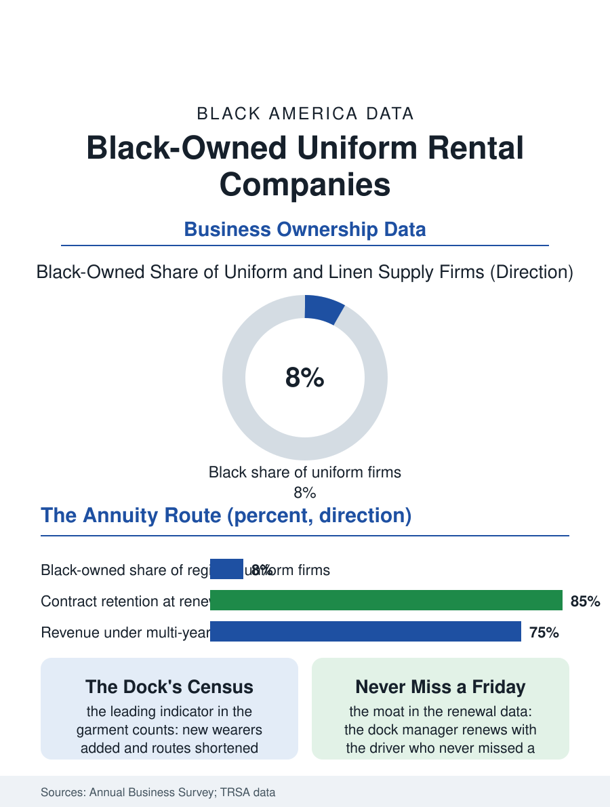

Black Business
The Region's Wardrobe: Black-Owned Uniform Rental
The plant, the route, and the garment count that reads the region's economy before the statistics do. The uniform file.

The uniform and workwear rental company is the industrial laundry's corporate form: the plant that supplies and launders the uniforms, the mats, and the shop towels of a region's workplaces on the weekly route, a scale business whose national giants dominate and whose regional tier includes Black-founded firms of standing. The business census counts the linen and uniform supply establishments in the hundreds of firms. This article reads the uniform rental file.
The Route and the Plant
The model is the service economy's most industrial: the plant's washers run at factory scale, the route's trucks exchange the week's soil for the week's clean at the customer's dock, and the contract, priced per wearer per week, is an annuity whose retention the route's reliability decides, so that the firm's assets are the garment inventory, the plant, and the book of routes in about that order of the bank's interest. The entry's capital is the file's gate, the plant's cost sorting the founders into the acquired and the inherited more than the started, the Black firms of the tier arriving substantially by the purchase of the existing regional from its retiring founders or by the founder's ascent through the national's own management in the pattern of the engineering file's alumni. The customer file is the workforce's mirror: the plants and the hospitals and the auto shops and the restaurants whose uniforms the routes carry, so that the firm's book is an index of the region's employment entire, its growth and its layoffs read in the garment counts a season before the statistics publish them. The garment's life cycle is the plant's quiet engineering file, the shirt's rated washes counted against its retirement, the mending room extending the count, the lost garment's chargeback the contract's friction point whose fairness the customer's audit and the firm's records argue at the renewal in miniature, so that the relationship's health can be read in the chargeback ledger's civility as reliably as in the route's.
Soil, Steam, and the Contract's Renewal
The plant's labor is the night and steam file's own, its workforce drawn from the same neighborhoods as the laundry file's, its safety and its wage files the industrial laundry's standing subjects in the labor literature. The competition's terms are the national's route density against the regional's knowledge, the renewal meeting being where the file is decided, the customer's dock manager renewing with the firm whose driver has never missed the Friday exchange over the bid that prices the garment a dime cheaper, a loyalty the sales data confirm is the regional's moat at exactly the accounts where the service's failure would idle the customer's own line. The environmental file is the plant's permit and its pride in the current era, the water and the chemistry of the industrial wash being regulated to the standards the leading firms advertise as their citizenship.
The Region's Wardrobe
The uniform file closes on the firm's peculiar civic knowledge, because the company that dresses the region's work holds a census of it that no bureau compiles: whose plants are hiring by the new wearers added, whose kitchens are closing by the routes shortened, the garment count as the economy's leading indicator known first at the dock. The Black-owned regional's place in that knowledge is the file's point, its founders and its route managers reading the region's labor from inside its own uniform. The census counts the linen supply firms in the hundreds, the giants' share of the revenue the category's concentration. The file's last entry is the Friday exchange at the plant gate of the region's largest shop, the clean bundles in and the soil out in the driver's practiced rhythm, the firm's whole annuity performed in four minutes at the dock, renewed weekly in the only vote the service economy counts, the customer's signature on the route sheet, kept. The mending room's seamstresses, the plant's least counted skilled hands, add their seasons to the garment's life in silence. Their work is measured in the garment's extra seasons, which is to say in the contract's quiet profit. The count of washes is the plant's biography of every shirt it owns. The record, in the end, is the work itself, still standing in the light it was made for.
More in Black Business
Black-Owned Businesses: Counts, Receipts, and the Representation Gap
About 161,000 Black-owned employer firms and three million solo ventures: how the Census Bureau counts Black business ownership, where firms concentrate, and the gap between population share and business share.
Black Median Net Worth: The Wealth Gap in Federal Reserve Data
The Federal Reserve puts Black median family net worth at $44,900, against $285,000 for White families — about 16 cents on the dollar. The widest gap in economic data.
Black Buying Power: The $1.8 Trillion Consumer Economy
Black buying power is estimated at about $1.8 trillion — larger than the economy of most nations. What the figure measures, who produces it, and what it buys.
Source: U.S. Census Bureau, Annual Business Survey for linen and uniform supply; Textile Rental Services Association data.